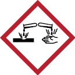
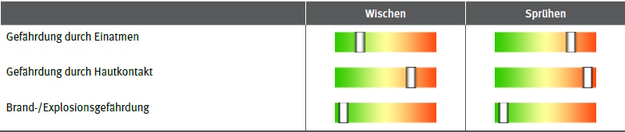

Anhang 1
Beispiel für eine GISBAU Information
|

Sanitärreiniger, ätzend
GISCODE: GS80
Signalwort: Gefahr
Gefahrenhinweise:
- Kann gegenüber Metallen korrosiv sein. (H290)
- Verursacht schwere Verätzungen der Haut und schwere Augenschäden. (H314)
Sicherheitshinweise:
- Schutzhandschuhe/Schutzkleidung/Augenschutz/Gesichtsschutz tragen. (P280)
- BEI VERSCHLUCKEN: Mund ausspülen. KEIN Erbrechen herbeiführen. (P301+P330+P331)
- BEI KONTAKT MIT DER HAUT (oder dem Haar): Alle beschmutzten, getränkten Kleidungsstücke sofort ausziehen. Haut mit Wasser abwaschen/duschen. (P303+P361+P353)
- BEI EINATMEN: An die frische Luft bringen und in einer Position ruhigstellen, die das Atmen erleichtert. (P304+P340)
- BEI KONTAKT MIT DEN AUGEN: Einige Minuten lang behutsam mit Wasser spülen. Vorhandene Kontaktlinsen nach Möglichkeit entfernen. Weiter spülen. (P305+P351+P338)
- Sofort GIFTINFORMATIONSZENTRUM/Arzt/... anrufen. (P310)
- Unter Verschluss aufbewahren. (P405)
- Inhalt/Behälter ... zuführen. (P501)
|
Charakterisierung
- Ätzende Sanitärreiniger sind stark saure, wasserverdünnbare Flüssigkeiten und werden zur Kalk-, Rost- und Urinsteinentfernung eingesetzt.
- Sie werden je nach Verschmutzung konzentriert oder verdünnt verwendet.
- Die Produkte enthalten neben Säuren (v. a. Phosphorsäure) auch Tenside, Hilfsstoffe, Farbzusätze und Parfümöle.
- Die folgenden Informationen beziehen sich vor allem auf den Umgang mit dem unverdünnten Produkt, z. B. Umfüllen oder Verdünnen.
- Gesundheitsgefahren gehen nach heutiger Kenntnis überwiegend von den Säuren und Tensiden aus.
Ersatzstoffe – Ersatzprodukte – Ersatzverfahren
- Es sollten möglichst wenig aggressive Produkte eingesetzt werden, z. B. Produkt-Code GS10, GS35.
Grenzwerte und Einstufungen
Phosphorsäure
- AGW: 2 mg/m3 gemessen in der einatembaren Fraktion
- Bemerkung Y (TRGS900)
Citronensäure
- AGW: 2 mg/m3 gemessen in der einatembaren Fraktion
- Bemerkung Y (TRGS900)
Gefahrstoffmessungen/Ermittlung
- Nur im Spritzverfahren (Aerosolbildung) besteht eine Belastung der Atemluft.
Gesundheitsgefährdung
- Eine Gefährdung durch Einatmen besteht bei Spritzverfahren.
- Verursacht Verätzungen, d. h. schädigt Atemwege, Augen und Haut bis zur Zerstörung.
- Bei gleichzeitiger Anwendung hypochlorithaltiger Reinigungsmittel kann giftiges Chlorgas freigesetzt werden.
Hygienemaßnahmen
- Im Arbeitsbereich keine Lebensmittel aufbewahren sowie weder essen, trinken, schnupfen noch rauchen!
- Berührung mit Augen, Haut und Kleidung vermeiden!
- Nach Arbeitsende und vor Pausen Hände gründlich reinigen!
- Hautpflegemittel nach der Arbeit verwenden (rückfettende Creme).
- Nach Arbeitsende Kleidung wechseln!
Benetzte/verunreinigte Kleidung sofort wechseln, in Wasser legen und erst nach deren Reinigung wieder benutzen!
Technische und Organisatorische Schutzmaßnahmen
- Verschlüsse vorsichtig öffnen.
- Beim Ab- und Umfüllen Verspritzen vermeiden.
- Gefäße nicht offen stehen lassen.
- Vorratsmenge am Arbeitsplatz auf einen Schichtbedarf beschränken.
- Nicht mit anderen Produkten oder Chemikalien mischen.
- Waschgelegenheit im Arbeitsbereich vorsehen.
- Augendusche oder Augenspülflasche bereitstellen.
Persönliche Schutzmaßnahmen
Augenschutz:
- Gestellbrille.
- Bei Spritzgefahr: Korbbrille
Handschutz:
- Handschuhe aus: Polychloropren, Nitrilkautschuk, Butylkautschuk.
- (Chemikalienschutzhandschuhe der Kategorie 3, erkennbar am CE-Zeichen mit vierstelliger Prüfnummer).
- Beim Tragen von Schutzhandschuhen sind Baumwollunterziehhandschuhe empfehlenswert.
Hautschutz:
- Für alle unbedeckten Körperteile fetthaltige Hautschutzsalbe verwenden!
Atemschutz:
- Atemschutz bei Grenzwertüberschreitung, z. B. an Vollmaske:
- Bei Anwendung im Spritzverfahren (bei starker Aerosolbildung) werden Partikelfilter P2 empfohlen.
Körperschutz:
- Beim Verdünnen bzw. Abfüllen: Kunststoffschürze.
- Bei Spritzverfahren: (Einweg-)Chemikalienschutzanzug und Kunststoffstiefel.
Erste Hilfe
Bei jeder Erste-Hilfe-Maßnahme: Selbstschutz beachten und Arzt hinzuziehen!
Nach Augenkontakt:
- 10 Minuten unter fließendem Wasser bei gespreizten Lidern spülen oder Augenspüllösung nehmen. Immer Augenarzt aufsuchen!
Nach Hautkontakt:
- Verunreinigte Kleidung sofort ausziehen.
- Betroffene Stellen mindestens 15 Minuten unter fließendes kaltes Wasserhalten.
Nach Einatmen:
- Person an die frische Luft bringen.
- Bei Bewusstlosigkeit Atemwege freihalten (Zahnprothesen, Erbrochenes entfernen, stabile Seitenlagerung), Atmung und Puls überwachen.
Nach Verschlucken:
- Kein Erbrechen herbeiführen.
- In kleinen Schlucken viel Wasser trinken lassen.
- Keine Gabe von Hausmitteln (Milch, Alkohol usw.).
Handhabung
- Beim Verdünnen dem Wasser zugeben, nie umgekehrt.
- Auch Lösungen oder Verdünnungen sind gesundheitsgefährdend.
- Bildet mit hypochlorithaltigen Reinigungsmitteln gefährliche Gase und Dämpfe (giftiges Chlorgas).
- Reagiert mit Laugen unter Wärmeentwicklung (Spritzgefahr!).
- Die vom Hersteller empfohlene Dosierung und sonstige Anwendungshinweise müssen sorgfältig beachtet werden.
Beschäftigungsbeschränkungen
- Jugendliche ab 15 Jahren dürfen hiermit nur beschäftigt werden, wenn dieses zum Erreichen des Ausbildungszieles erforderlich und die Aufsicht eines Fachkundigen sowie betriebsärztliche oder sicherheitstechnische Betreuung gewährleistet ist.
- Schwangere Frauen dürfen hiermit nicht beschäftigt werden, wenn der Luftgrenzwert oder der biologische Grenzwert überschritten ist ("unverantwortbare Gefährdung" nach Mutterschutzgesetz).
Arbeitsmedizinische Vorsorge
- Bei Feuchtarbeit von regelmäßig mehr als 2 h pro Tag ist eine arbeitsmedizinische Vorsorge "Feuchtarbeit" anzubieten, bei mehr als 4 h zu veranlassen.
- Beim Tragen von Atemschutz ist eine Pflichtvorsorge – Atemschutzgeräte – zu veranlassen. Bei Atemschutzgeräten der Gruppe 1 nach AMR 14.2 ist lediglich eine Angebotsvorsorge anzubieten. Dazu gehören zum Beispiel: Filtergeräte mit Partikelfilter der Partikelfilterklassen P1 und P2 und partikelfiltrierende Halbmasken; gebläseunterstützte Filtergeräte mit Voll- oder Halbmaske; Druckluft-Schlauchgeräte und Frischluft-Druckschlauchgeräte, jeweils mit Atemanschlüssen mit Ausatemventilen.
Gefahrguttransport
- Die Produktgruppe ist der Klasse 8 mit UN-Nummer UN1805 und Verpackungsgruppe III zugeordnet.
- Soll der Transport unter erleichterten Bedingungen (Kleinmengentransport) durchgeführt werden, muss die transportierte Menge in Liter mit dem Faktor 1 multipliziert werden. Als Kleinmengentransporte gelten nur Transporte, bei denen bei der Aufaddierung der Multiplikationsergebnisse die Zahl 1000 nicht überschritten wird.
Entsorgung
- Nicht in Regenwasserkanalisation gelangen lassen.
- Abfälle nicht vermischen! Zur ordnungsgemäßen Beseitigung bzw. Rückgewinnung in beständigen, verschließbaren und gekennzeichneten Gefäßen getrennt sammeln.
- Restmengen sind unter Beachtung der örtlichen Vorschriften einer geordneten Abfallbeseitigung zuzuführen! Folgende EAK/AVV-Abfallschlüssel können infrage kommen:
Produktreste:
- 06 01 99 Abfälle a. n. g.
- 07 06 01* wässrige Waschflüssigkeiten und Mutterlaugen
- 07 06 08* andere Reaktions- und Destillationsrückstände
- 07 06 99 Abfälle a. n. g.
Lagerung
- Nach Umfüllen Behälter wie Originalgebinde kennzeichnen.
- Behälter dicht geschlossen in einem gut belüfteten sowie gut beleuchtbaren Raum lagern. Zugang nur für fachkundiges Personal.
- Nicht in Pausen-, Aufenthalts- oder Sanitärräumen sowie in Treppenräumen, Fluren, Flucht- und Rettungswegen, Durchgängen, Durchfahrten und engen Räumen lagern.
- Das Produkt fällt unter die Lagerklasse (LGK) 8B (nicht brennbar ätzend) der TRGS 510.
- Ab einer Gesamtlagermenge von 200 kg gelten Zusammenlagerungsverbote.
- Nicht mit Stoffen der folgenden LGK zusammenlagern: 1; 5.1 A; 5.2; 6.2; 7
- Die Lagerung mit Stoffen der folgenden LGK ist nur unter den in der TRGS 510 genannten Bedingungen möglich:
4.1 A; 4.2; 4.3; 5.1C
- Es handelt sich um eine Säure. Säuren sind getrennt von Laugen zu lagern (ausreichender Abstand, Verwendung unterschiedlicher Auffangwannen).
Schadensfall
- Nach Verschütten mit saugfähigem Material (z. B. Kalksteinmehl, Universalbinder) aufnehmen und wie unter Entsorgung beschrieben behandeln.
- Reste mit viel Wasser wegspülen.
- Produkt ist nicht brennbar, im Brandfall Löschmaßnahmen auf Umgebung abstimmen.
- Das Eindringen in Boden, Gewässer und Kanalisation muss vermieden werden (deutlich wassergefährdend – WGK 2).
Hinweise:
- GISCODE ist die Zuordnung von Produkten zu einer Produktgruppe; siehe Gebinde, Sicherheitsdatenblätter, Technische Merkblätter und Preislisten.
- Die Informationen beziehen sich ausschließlich auf Arbeits- und Gesundheitsschutz bei Tätigkeiten mit den Produkten. Aussagen über die technisch chemische Anwendung, die Einsatzzwecke und die Eigenschaften werden nicht getroffen.
- Produkte, die dieser Produktgruppe zugeordnet sind, können im Einzelfall eine abweichende Kennzeichnung (Piktogramme, H/P-Sätze) oder abweichende sonstige Einstufungen (WGK, GGVSEB usw.) aufweisen.
- Diese Produkt-/gruppen-Information unterstützt Sie bei der Durchführung der Gefährdungsbeurteilung nach §6 der Gefahrstoffverordnung und kann ggf. für Dokumentationszwecke verwendet werden.
- Betriebsspezifische oder tätigkeitsbezogene Abweichungen oder Ergänzungen sind dann im Kapitel ,Gefährdungsbeurteilung' anzugeben.
Copyright
by GISBAU 15.06.2020
Erstellt nach Sicherheitsdatenblättern verschiedener Hersteller und sonstigen Unterlagen.
Vervielfältigung erwünscht!
Hilfe bei der Gefährdungsbeurteilung
Orientierender Überblick zur inhalativen, dermalen und physikalisch-chemischen Gefährdung:

Die folgenden Angaben geben Auskunft darüber, ob die jeweiligen Punkte bei der Gefährdungsbeurteilung
besonders zu berücksichtigen sind.
| |
Wischen |
Sprühen |
| Handschutz |
JA |
JA |
| Hautschutz |
JA |
JA |
| Atemschutz |
NEIN |
JA |
| Augenschutz |
JA |
JA |
| Körperschutz |
JA |
JA |
| Betriebsanweisung |
JA |
JA |
| Ersatzstoff notwendig |
JA |
JA |
| Grenzwertüberschreitung |
NEIN |
- |
| Arbeitsmedizinische Vorsorge |
JA |
JA |
| Beschäftigungsbeschränkungen |
JA |
JA |
Gefährdungsbeurteilung
Zur Dokumentation Ihrer Gefährdungsbeurteilung können Sie unter https://wingisonline.de/gisbauwebservices/gisbaudbhandler.ashx?type=ADDINFO&ID=1272 ein Word-Dokument herunterladen, in dem die folgenden Themen zu behandeln sind. Hilfe und Beispiele finden Sie hier: https://wingisonline.de/gisbauwebservices/gisbaudbhandler.ashx?type=ADDINFO&ID=1274
Die Tätigkeiten mit diesem Gefahrstoff werden entsprechend der Maßnahmen dieser GISBAU-Information durchgeführt (Handlungsempfehlungen nach Nummer 6.1 Absatz 5 TRGS 400). Darüber hinaus sind die betriebsspezifischen Angaben, Ergänzungen und Abweichungen zu dokumentieren.
- Arbeitsbereiche/Tätigkeiten
- Häufigkeit/Dauer der Exposition/Stoffmengen
- Ermittlungsergebnisse zur inhalativen Exposition
- Gefährdungen (inhalativ, dermal, physikalisch, chemisch)
- Substitutionsprüfung
- Begründung für Substitutionsverzicht
- Schutzmaßnahmen (technische, organisatorische, persönliche)
- Wirksamkeitsprüfung der Schutzmaßnahmen
- Geplante Maßnahmen um Grenzwerte einzuhalten
- Explosionsschutz-Maßnahmen
- Sonstiges (z. B. Erkenntnisse aus arbeitsmedizinischer Vorsorge)
- beteiligte Personen
- Datum/erstellt von